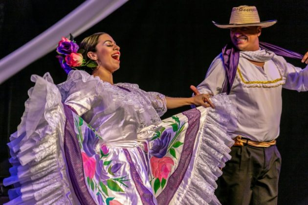
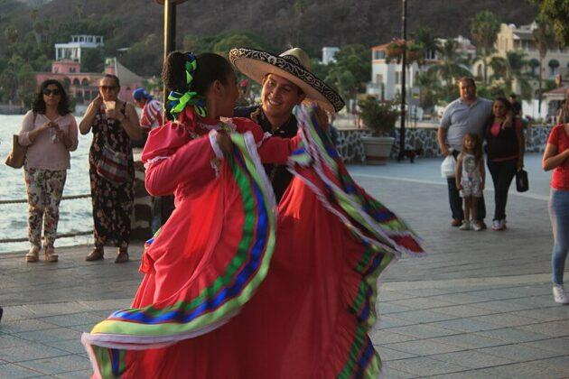

DURANGO!!, Danza de las palmas, También conocido como danza de las plumas, es un baile de origen español
practicado en Durango desde hace más de 400 años.
En sus inicios tuvo connotaciones religiosas, ya que era realizado a modo de celebración por la lluvia o las
buenas cosechas de la agricultura.
Es acompañada por música muy animosa que cambia de manera veloz con la intención de despistar a los bailarines,
que deben seguir bailando y adaptarse al ritmo.
LA CHOTIS!.. A veces llamado shotis, es un baile originario de Bohemia, República Checa, que durante el siglo
XIX se extendió
rápidamente por toda Europa.
Se introdujo a México en 1850, aunque para aquel momento solo era bailado en grandes salones por las clases más
altas de la sociedad.
Luego de algún tiempo, las demás clases sociales adoptaron el baile y comenzaron a practicarlo en sus casas y
lugares de reunión, sin embargo, adoptaron un estilo menos fino. Es un baile tradicional de otros tres estados:
Nuevo León, Tamaulipas y Zacatecas.

CUADRILLA!.. Es un baile de salón de origen francés.
Durante la ocupación francesa en Durango en la década de 1860 varios soldados se establecieron en el municipio de
Tepehuanes, donde practicaron este baile que luego fue copiado por los habitantes locales.

REDOVAS!.. Las redovas es una inspiración de la rejdovak, otro baile de origen centroeuropeo que se asentó en
Durango a mediados del siglo XIX. Al ritmo de 3×4, este baile mezcla tiempo y movimientos del vals y la mazurca.
Se baila en pareja, destacando la vestimenta de cada uno. Ellas visten un vestido confeccionado con telas de
colores (normalmente brillantes), una bluesa de cuello alto y botitas. Ellos usan vaquero, camisa lisa o de
cuadro, chaqueta, sombrero de filtro y botas.
BAILE
VIDEO
ÉPOCA DEL AÑO
Danza de las palmas
Esta danza, que implica el ritmo y el movimiento de las palmas, se puede realizar en varias ocasiones
festivas a lo largo del año. Por ejemplo, en España, la Danza de las Palmas es una parte integral de las
celebraciones de Semana Santa, especialmente en regiones como Andalucía. En otros lugares, esta danza también
puede realizarse durante festivales folclóricos u ocasiones especiales en la comunidad.
La chotis
El chotis es una danza tradicional asociada principalmente con la ciudad de Madrid, España. Aunque no está
limitada a una época específica del año, es común verla durante las fiestas de San Isidro, el patrón de
Madrid, que se celebran en mayo. También puede presentarse en otras festividades locales y eventos culturales
en la región.
Cuadrilla
La Cuadrilla es una danza típica de varias regiones de España, especialmente en Navarra y La Rioja. Se puede
realizar en diferentes momentos del año, pero es común verla durante las festividades de San Fermín en
Pamplona, que tienen lugar del 6 al 14 de julio. También puede ser parte de otras festividades locales y
eventos culturales en la región.
Redovas
Las redovas son una forma de baile tradicional mexicano que se puede realizar en varias festividades y
celebraciones a lo largo del año. Pueden ser parte de las celebraciones de las fiestas patronales, festivales
folclóricos, bodas y otros eventos comunitarios en México. La época del año en que se realizan puede variar
según la región y las tradiciones locales.